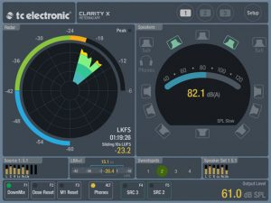

Posted by Mikers On August - 11 - 2016ADD COMMENTS
AudioMaster: For Podcasts and Music
Import any audio and instantly get a mastered version. Immediately hear the boost in volume and overall polish of the mix. Export, save and share anywhere you wish. 1 free trial included.
Great for Podcasts, Music, Voiceover, Demos, Memos, etc…
Let AudioMaster put the final touches on your sounds by enhancing the mix and sonic characteristics, . Our audio algorithm automatically adjusts levels and gives a general “sweetening”. Think of it as the difference between a good-sounding mix and a louder professional-sounding, finished master.
From the makers of MicSwap, MicSwap Pro and Audio Fix: For Videos
13 GENRES TO CHOOSE FROM
◆ Flat EQ
◆ Podcasts
◆ Rock
◆ Folk
◆ Blues
◆ Classical
◆ Country
◆ Hip Hop
◆ Electronic
◆ Jazz
◆ Latin
◆ New Age
◆ Pop
◆ R&B / Soul
Universal App – Buy one version and own it on all devices
Compatible with iPhones, iPads iOS 9 and up
Posted by Mikers On August - 11 - 2016ADD COMMENTS
SPL Graph is an audio Sound Pressure Level (SPL) environmental noise analyzer, real-time frequency analyzer, chart recorder and data logger. It includes:
* Plot sound level over time
* Record audio while plot is running
* Capture video of events
* Do octave and 1/3 octave band analysis
* Show a 3D Plot of octave or 1/3 octave results
* Calculate Ln SPL values, L01, L10, L50, L90, L95, LMax and LMin
* Email notifications when sound exceeds pre-set limits
* Auto-save results after set intervals, and email the results to you
* Start another plot after auto-saving for continuous operation
SPL Graph Pro includes all in-app purchase options, including octave logging and video capture.
SPL Graph works by averaging the SPL for a period of time that can vary from 0.1 second to 60 minutes, applying an optional weighting filter, and plotting the sound level, recording the raw audio signal, if recording is turned on.
For sound intervals of 1.0 second to 60 minutes, the optional octave and 1/3 octave logging modules allows storing the spectrum of the sound, for each interval.
The app works very well with the built-in iOS device microphone. To upgrade the app to true professional standards, add our iTestMic, iPrecisionMic, or iAudioInterface2 with an appropriate microphone, and get ANSI or ISO Type 1 or 2 results. With iPrecisionMic, you can actually send the system in to our calibration lab and get a calibration certificate for ISO 61672 and ANSI S1.4.
SPL Graph can record up to 24 hours of sound level data, with single second resolution. The graph starts with a one-minute plot window, and as a minute is recorded, the graph re-scales automatically and adds another minute to show the data collected so far. The overall SPL level, or LEQ, is displayed for whatever portion of the test is showing on the graph.
Tap the play button to play back the recorded audio, and you can use the cursor to scrub the audio location on the graph. Use this feature to listen to events that you can see on the graph.
With the octave logging module, you can also record the octave or 1/3 octave band levels. And, you can view the data on the 3D plot for a graphical view of frequency over time.
You can scroll and scale the graph vertically, in dB, by using standard swipe and pinch gestures. You can also scroll and expand and contract the time axis using gestures. Zoom out to a full 24 hours, or zoom in to a single minute, showing second resolution. Double-tap the screen to zoom out to show the entire graph on the screen.
The time scale grid changes dynamically, highlighting minutes, ten-minute, and hour lines as as it runs.
As the graph runs, the overall LEQ (average SPL) for the entire time period is computed and displayed on the screen. Swiping across the graph brings up a cursor that displays the exact dB level and time for any point on the graph.
You can turn on audio recording, so that you have a record of the sounds that were happening while the graph was being stored. You can use this to figure out exactly what the sound was that caused a peak on the graph, for example. Recordings can be compressed or uncompressed.
SPL Graph supports saving graphs directly on your iOS device. You can recall these graphs and bring them up on the screen, and listen to the sounds that were made while the graph was recorded. You can also store an image of the screen to your photo roll. Use Dropbox or iTunes Files Sharing to export the results to your computer.
You can also export data in tab-delimited files for XLS import. Dropbox is supported for automatic file transfer.
The filters are all ANSI type 1 or better, and include A-weighting, C-weighting, and all octaves band filters from 32 to 16kHz.
Posted by Mikers On August - 11 - 2016ADD COMMENTS
The first drum synthesizer plugin for iOS. Works conveniently inside your sequencer and Audio Unit Instrument hosts so you can focus on making electronic music without app switching and screen juggling like before.
*IMPORTANT* Audio Units are plug-ins that need a compatible host app to work. Ruismaker has been tested to work beautifully with Steinberg Cubasis, Apple Garageband, Modstep, AUM and MultitrackStudio.
– Audio Unit Instrument: making music on iOS doesn’t get more convenient
– Each sound is modeled using authentic analog and FM algorithms;
– Comes with dozens of unique customizable models, more to come
– Does not use any samples; all sounds are synthesized in realtime, on the fly
– Emulates analog components, introducing subtle, natural fluctuations in the sound
– Replicates the Ruismaker Annabella hardware drum machine
– Light on the CPU, so you can run lots of Ruismakers simultaneously
– Has an extra compact 4″ UI mode; especially for iPhone SE and iPhone 5S
– Fully automatable parameters (requires host support)
– Fully MIDI controllable using MIDI CC
– Download the advanced guide on ruismaker.com for more details about parameter automation, available instruments and MIDI implementation
Posted by Mikers On August - 10 - 2016ADD COMMENTS
Metagrid is a perfect companion for all creative Mac/Windows users who work with complex software like graphic suites, digital audio workstations or video-editing software. It enables you to streamline your workflow and control your favourite apps on Mac directly from the iPad by sending:
– keyboard shortcuts
– text
– MIDI notes
– MIDI CCs
– MIDI Program Changes
– powerful macros
Metagrid is shipped with ready-to-use predefined view sets for popular creative apps like Illustrator, Photoshop, Protools, Logic X Pro, Digital Performer, Final Cut, Cubase, Studio One for Mac as well as Cubase, Digital Performer and Studio One for Windows. We will be adding more content for Windows soon.
Metagrid features deep integration with popular DAW applications like Logic Pro X, Cubase, Digital Performer and Studio One. You can choose from complete sets of commands available for these DAWs directly on your iPad and in no time assign them to your buttons.
Metagrid detects the application that is in focus on your computer and automatically displays the appropriate defined viewset. For custom views you can select several view sizes (from 6 up to 110 buttons).
Metagrid features hundreds of icons with dedicated sets for Illustrator, Photoshop, Protools, Final Cut, Digital Performer, Logic Pro X, Cubase and Studio One.
Requirements:
– iPad device with iOS 9.x
– a computer running OSX 10.9/ Windows 7 and later with installed Metaserver application which can be downloaded from our website (www.metasystem.io)
Posted by Mikers On August - 10 - 2016ADD COMMENTS
Pretty straightforward description below, but lets face it we all know what to expect from this app, and as far as EQs go, this is a nice addition to your workflow.
Description
zMors EQ is an audio unit v3 effect plugin.
To use this app you need an AUv3 host app.
Specs:
– 5 band EQ with M/S option
– 7 filter types
– sample delay 0 to 1024 samples on left or right channel
– pan
– master level
– analog noise
– host automation support
Posted by Mikers On August - 10 - 2016ADD COMMENTS
Moodscaper is a generative music app and a great personal companion for studying, providing non-intrusive headphone music at work, relaxing, meditating and even sleeping. Just launch the app, tap automatic play, and moodscaper will produce melodic, atmospheric and evocative ambient music in a “light”, “dark”, “space” or “sad” mood.
Moodscaper is also an easy to use instrument for creating epic-sounding pads and effects as part of a larger iPad-based music-making setup. You can even create your own custom instrument by loading your own samples, and taking advantage of moodscaper’s generative engine.
Main features:
· Unique generative atmospheric sample-based instrument
· Simple one-screen / no text user interface
· Four scale-based moods
· Three loopers (five on iPad) with optional sync
· Provides tasteful auto-accompaniment to your bass and chord loops
· Hints displayed on keys that should sound good with root notes or chords
· Samples are randomly stacked for a bigger sound with more variation
· Extra effects section (iPad only) with filter, delay and reverb
· Effects tweaks can be recorded in loopers
· Additional 20 key instrument for each mood (iPad only)
· Add your own samples and create your own mood-based instrument
· Additional instruments available as free downloads at moodscaper.com
· IAA support (as a generator) with no special setup required
The moodscaper development approach is to release small and frequent updates. This creates a tight feedback loop between me (the developer) and you guys, so you get to drive what new features are included in the app. Thanks to the great ideas suggested by current users, moodscaper has already gone in directions I didn’t originally envisage, so please consider being part of that, *especially* if you don’t see your “must have” feature in the list above. You never know, I might be working on that feature already for the next release, or if enough people ask for it, I’ll do my best to implement it 😉
For more information, a downloadable manual, demos and support, please visit www.moodscaper.com
Posted by Mikers On August - 10 - 2016ADD COMMENTS
Metering app for TC ELECTRONIC Clarity X Multi-Format Monitoring System.
The Clarity X Multi-Format Monitoring System is an ultra-flexible audio monitor controller and metering unit for music- and film production, covering channel formats up to 7.1 surround.
The Clarity X Metering App brings the powerful metering tools of Clarity X right to your iPad, creating a fantastic foundation for your critical mix decisions.
Having the essential visual feedback on a permanent screen simply makes using the important meter information much easier as you don’t need to select a new application or UI tab to get a quick glance at your loudness landscape or downmix compatibility.
The Clarity X Metering App provides a number of great metering tools that give you helpful visual feedback on a number of parameters, helping you make the most of your mix:
• Our legendary LM6 Loudness Radar Meter provides all essential loudness monitoring information on a single screen
• State-of-the-art True-Peak Meter identifies potential clipping in codecs, DACs and downstream filters
• Detailed statistics overview for all key loudness measuring parameters
• Input and output meters give you a great overview of the signal flow
• Center Ratio shows the balance between your center speaker and the rest of your surround setup
• The Stereo Deviation Meter is a stereo downmix compliance meter based on our industry-standard loudness measurement algorithms
• The LRA+I Meter gives you a combined view of your Loudness Range (LRA) and Program Loudness (I)
• Dose Meter keeps track of your daily audio exposure and gives you the tool to prevent listening fatigue
• SPL Meter shows the current sound pressure level in your studio
Beside the metering, we have added a number of controls:
– Source Select
– Output Speaker Select
– Sweet Spots
– Two additional, assignable Function-buttons for your Remote Control
– Compliant with all major broadcast standards including ITU BS.1770-4, ATSC A/85, EBU R128, TR-B32 and OP-59
Note! The Clarity X Metering App only works in conjunction with the Clarity X Multi-Format Monitoring System. Also available as a free stand-alone application for MAC and PC.
Posted by Mikers On August - 10 - 2016ADD COMMENTS
The black plugKEY from Korg is an audio and MIDI interface designed for use with iOS Lightning devices and any MIDI controller with a 5-pin DIN connector. The portable interface has a built-in Lightning cable to connect to your device, while the microUSB charging port keeps your device charged while in use. Additionally, the plugKEY offers a stereo 1/8″ headphone output with a dedicated volume knob that controls both the headphone and the two high quality 1/4″ stereo outputs. The 5-pin DIN MIDI connector mitigates any issues with latency and offers excellent performance when using iOS apps. Korg has made available two free apps, Gadget Le and Module Le, to get you started.
Note:Note! plugKEY does not include a microUSB cable for charging or a MIDI cable for connecting to a MIDI device
Connect plugKEY to your iOS device and a 5-pin DIN MIDI controller
“Made for iPod/iPhone/iPad” certification obtained from Apple
Two studio-quality 1/4″ jack audio outputs
1/8″ stereo headphone output
Volume control
Use while charging your iOS device
Compact design can be taken anywhere
Free apps that let you start immediately playing and producing music
Posted by Mikers On August - 10 - 2016ADD COMMENTS
Here’s something typically, Japanesy and quirky that could produce some fun, novel beats and tunes for you…
PICO – Piano Roll Chiptune Composer
Easily compose NES music.
Piano roll composer app.
Sound can be confirmed on the keyboard drag.
Notes can be placed to the screen tap.
Screen Scalable in the pinch in-out.
Multipart possible composer.
Music part is a switch can be switched.
Music can be saved with a name.
Music can be recorded in the file (AAC format).
Octave Range C1 – C7.
For other operation specifications, check the operating instructions in the app.
* Function List
– Score save.
– Recording (AAC file).
– BPM (speed of the music) change.
– The maximum number of bar change.
– Tone change for each part.
– Volume change for each part.
* Tone List
– Square 1 (50:50)
– Square 2 (75:25)
– Square 3 (87.5: 12.5)
– Triangle
– Sine
– Sawtooth
– Long Noise 1 (low)
– Long Noise 2 (high)
– Short Noise 1 (low)
– Short Noise 2 (high)
Posted by Mikers On August - 10 - 2016ADD COMMENTS
After the huge success of the PPG Phonem VST/AU plugin, we optimized the sound-engine to make it run pretty well on the iPad.
It has also been adapted to make best use of multi-touch and comes with IAA and AU-extension.
PPG Phonem lets the user create expressive vocal synthesis beyond anything ever heard before. With its advanced routing system every aspect of the voice can be controlled and modulated in any conceivable way. Anything from a quiet whisper to a scream. Use the intuitive text to speech tool to make Phonem say whatever you want.
Although the PPG Phonem was originally designed to do just vocal synthesis, it turned out that the system was also capable of producing a wide range of universal synthsizer sounds. So we extended the parameter ranges and made everything accessible to the user, to take advantage of this fact.
▪ Create your own singing style and expressions
▪ Large Phoneme inventory – 46 english/american plus 5 german plus 4 french phonemes
▪ Versatile excitation generator/oscillator
▪ Working with typical voice source or wavetable and time-corrected-samples (TCS)
▪ Extreme time stretching, freezing and reversing
▪ Pitch track – let your robots sing
▪ Control track – let it cry and shout
▪ Song mode – making it easy to compose your synthesized text
▪ Wave page – create your own wavetables and modify time-corrected-samples
▪ Import WTS and TCS files from the iPad WaveGenerator and WaveMapper
▪ All internal parameters available to the user – give your voices a special dialect or individual character
▪ Versatile matrix system – allowing 19 sources to control 40 parameters
▪ Two X/Y control pads freely routable to 40 parameters
▪ 6 Envelopes, for control of filter sweeps, waveform, noise and many modulations
▪ 4 LFOs plus Vibrato, Flutter and Growl generators
▪ Fully programmable resonator filter – allowing production of new sound effects
▪ Delay/Reverb effect
▪ Overdrive/Distortion effect
▪ A/B compare your edited sounds
▪ AU extension – run multiple Phonem instances in AU hosts
▪ IAA – inter-app audio support
▪ Audiobus 2 with statesaving
▪ 10 min audio recording and Audio copy to the pasteboard
▪ Redesigned browser with new listing filters
▪ Directly accessible context help for each module
▪ Freely configurable schematic keypads, with extremely expressive modulation options
▪ 4 Keypads play modes: Poly, Mono, Legato and Multitrigger.
▪ 4 MIDI modes: Omni, Poly, Mono, and Voice-Per-Channel.
Thanks for dropping by ProMusicApps. Whether you're a dedicated app developer, or devoted app users like us, we hope you find what you're after. Ping us via the Contact Page if you want to touch base.


 Metagrid is a perfect companion for all creative Mac/Windows users who work with complex software like graphic suites, digital audio workstations or video-editing software. It enables you to streamline your workflow and control your favourite apps on Mac directly from the iPad by sending:
Metagrid is a perfect companion for all creative Mac/Windows users who work with complex software like graphic suites, digital audio workstations or video-editing software. It enables you to streamline your workflow and control your favourite apps on Mac directly from the iPad by sending:

 Moodscaper is a generative music app and a great personal companion for studying, providing non-intrusive headphone music at work, relaxing, meditating and even sleeping. Just launch the app, tap automatic play, and moodscaper will produce melodic, atmospheric and evocative ambient music in a “light”, “dark”, “space” or “sad” mood.
Moodscaper is a generative music app and a great personal companion for studying, providing non-intrusive headphone music at work, relaxing, meditating and even sleeping. Just launch the app, tap automatic play, and moodscaper will produce melodic, atmospheric and evocative ambient music in a “light”, “dark”, “space” or “sad” mood.
 The black plugKEY from Korg is an audio and MIDI interface designed for use with iOS Lightning devices and any MIDI controller with a 5-pin DIN connector. The portable interface has a built-in Lightning cable to connect to your device, while the microUSB charging port keeps your device charged while in use. Additionally, the plugKEY offers a stereo 1/8″ headphone output with a dedicated volume knob that controls both the headphone and the two high quality 1/4″ stereo outputs. The 5-pin DIN MIDI connector mitigates any issues with latency and offers excellent performance when using iOS apps. Korg has made available two free apps, Gadget Le and Module Le, to get you started.
The black plugKEY from Korg is an audio and MIDI interface designed for use with iOS Lightning devices and any MIDI controller with a 5-pin DIN connector. The portable interface has a built-in Lightning cable to connect to your device, while the microUSB charging port keeps your device charged while in use. Additionally, the plugKEY offers a stereo 1/8″ headphone output with a dedicated volume knob that controls both the headphone and the two high quality 1/4″ stereo outputs. The 5-pin DIN MIDI connector mitigates any issues with latency and offers excellent performance when using iOS apps. Korg has made available two free apps, Gadget Le and Module Le, to get you started.


{kind=link}
{kind=link}
{kind=link}
{kind=link}
{kind=link}
{kind=link}
{kind=link}
{kind=link}
{kind=link}
{kind=link}
{kind=link}
{kind=link}
{kind=link}
{kind=link}
{kind=link}
{kind=link}
{kind=link}
{kind=link}
{kind=link}
{kind=link}
{kind=link}
{kind=link}
{kind=link}
{kind=link}
{kind=link}
{kind=link}
{kind=link}
{kind=link}
{kind=link}
{kind=link}
{kind=link}
{kind=link}
{kind=link}
{kind=link}
{kind=link}
{kind=link}
{kind=link}
{kind=link}
{kind=link}
{kind=link}